Deze reis was onze droom, jarenlang bij elkaar gespaard en met stip bovenaan onze bucketlist. Maar terwijl wij op zee waren, veranderde de wereld. De dagen vulden zich met spanning, gesloten grenzen, tegenstrijdige berichten en momenten waarop we niet wisten waar we zouden eindigen. Toch vonden we steeds weer een manier om door te gaan. Lees hieronder het volledige verhaal van een avontuur dat ons raakte, vormde en ons uiteindelijk leerde wat thuiskomen werkelijk betekent.
Over een week is het zover: onze reis naar Hongkong en de aansluitende cruise met de Westerdam gaat beginnen. De voorbereidingen zijn in volle gang. De vluchten zijn geboekt, de hotels geregeld en de koffers staan klaar om gevuld te worden.
We vliegen op 30 januari non‑stop met KLM naar Hongkong, waar we de volgende ochtend aankomen. Voor die nacht hebben we een hotel geboekt. Op 1 februari laten we ons naar de Kai Tak Cruise Terminal brengen, waar de Westerdam op ons ligt te wachten. We zijn al vaker met Holland America Line op pad geweest: in 2016 naar Alaska en in 2017 door de Middellandse Zee. Het voelt dus een beetje als thuiskomen.
Deze reis duurt vier weken en voert langs China, de Filipijnen, Japan, Taiwan en Zuid‑Korea. In totaal zouden we zeventien havens aandoen. In Sjanghai en Beijing zijn we al eerder geweest, maar misschien valt er ter plekke nog iets nieuws te ontdekken.
Oorspronkelijk hadden we een tweeweekse cruise in optie staan, maar omdat we vooral veel van Japan wilden zien, besloten we beide cruises achter elkaar te boeken. Zo blijven we vier weken aan boord.
Er zijn inmiddels wat wijzigingen doorgevoerd: Keelung (Taiwan) wordt twee dagen in plaats van één, Qingdao (China) is vervangen door een dag op zee en in Beijing blijven we een nacht langer. Ook moesten we een excursie in Naha annuleren omdat het kasteel dat we zouden bezoeken door brand is verwoest.
Het aanvragen van het Chinese visum bleek een uitdaging. De online vragenlijst vroeg om werkgevers, opleidingen en zelfs het banksaldo. Uiteindelijk konden we alles inleveren bij het Visa Application Center in Den Haag. Ingrid moest haar vingerafdrukken laten nemen, wat nog een hele onderneming bleek. Maar: de visa zijn binnen.
Nu rest ons alleen nog het aftellen tot vertrek.
Vandaag viel er een e‑mail van Holland America Line in onze inbox — een bericht waar we al een beetje op voorbereid waren, maar dat toch even binnenkwam. Het coronavirus, dat de afgelopen dagen steeds vaker in het nieuws verscheen, begint nu ook invloed te krijgen op onze reis. De eerste Chinese haven die we zouden aandoen, Sjanghai op 15 februari, is uit het vaarschema geschrapt. Passagiers die daar zouden ontschepen, worden nu omgeboekt naar Yokohama.
Voor ons betekent dit dat de excursie die we in Sjanghai hadden geboekt, geannuleerd moet worden. Dat proces hebben we meteen in gang gezet. HAL laat weten dat er vooralsnog geen problemen worden verwacht bij aankomst op Hongkong Airport en bij het inschepen op de Westerdam, maar het voelt alsof de situatie met de dag verandert.
Het nieuws roept herinneringen op aan onze reis tijdens de Mexicaanse griep. Toen werden we in Sjanghai opgewacht door medewerkers in beschermende pakken, die bij alle passagiers de temperatuur opnamen voordat we verder mochten. Het was een surrealistisch gezicht — en we vermoeden dat Hongkong ons binnenkort een vergelijkbaar welkom zal bezorgen.
We hebben telefonisch contact opgenomen met HAL om te vragen naar een bijgewerkte route. De vraag die ons vooral bezighoudt: blijven Beijing en Dalian nog wel op het programma staan? Voorlopig hebben we nog geen antwoord ontvangen, maar we hopen snel meer duidelijkheid te krijgen.
Intussen probeerden we een excursie in Yokohama te boeken, maar dat bleek niet mogelijk. De website moet eerst worden aangepast aan de nieuwe situatie. Het advies was om de excursie aan boord te regelen — iets wat we dan maar zullen doen.
En zo zitten we hier, twee dagen voor vertrek, met koffers die bijna klaarstaan en plannen die langzaam beginnen te schuiven. We volgen het nieuws, wachten op updates en hopen dat de reis ondanks alles gewoon door kan gaan. Meer kunnen we op dit moment niet doen.
Gisteren werden we gebeld door het reisbureau. Het was zo’n telefoontje waarvan je al voelt dat er iets gaat veranderen nog voordat de boodschap is uitgesproken. En inderdaad: alle Chinese bestemmingen zijn uit de cruise geschrapt. Geen Sjanghai, geen Beijing, geen Dalian. De vaarroute blijft in grote lijnen hetzelfde voor de eerste twee weken, maar op 15 februari komen we niet aan in Sjanghai — we meren nu af in Yokohama.
Daarna volgt een reeks van zeven Japanse havens. Het aantal zeedagen is teruggebracht van acht naar zes, wat voor ons eigenlijk verrassend gunstig uitpakt. We hebben deze reis immers vooral geboekt vanwege onze fascinatie voor Japan. De Chinese steden kennen we al; daar zijn we eerder geweest en hebben we de belangrijkste bezienswaardigheden gezien. Maar Japan… dat blijft trekken, met zijn cultuur, zijn steden, zijn landschappen. In dat opzicht voelt deze wijziging bijna als een cadeautje.
De terugvlucht is inmiddels omgeboekt naar Tokyo. Ook het hotel en de transfer zijn geregeld — alsof de puzzelstukjes zich vanzelf opnieuw hebben geschikt. Het is bijzonder hoe snel zo’n reis zich kan aanpassen aan de omstandigheden, en hoe soepel alles dan toch weer op zijn plek valt.
Vanmiddag worden we opgehaald voor de rit naar Schiphol. De koffers staan klaar, de papieren liggen in een keurig stapeltje, en het huis voelt alsof het even zijn adem inhoudt. De vlucht naar Hongkong vertrekt om 17.40 uur. Het volgende bericht zal dus vanuit Hongkong komen — als het avontuur echt begint.
De vlucht van gisteren verliep verrassend soepel. We vertrokken met slechts tien minuten vertraging van Schiphol, en de controles gingen sneller dan we gewend zijn. Het viel meteen op dat het toestel niet helemaal vol zat — waarschijnlijk een gevolg van de toenemende onrust rond het coronavirus. De sfeer aan boord was rustig, bijna ingetogen, alsof iedereen zich bewust was van de bijzondere tijd waarin we reisden.
We landden uiteindelijk zelfs iets eerder dan gepland in Hongkong. Bij de paspoortcontrole hing een groot bord met de vraag of reizigers recent in Wuhan waren geweest. De ambtenaar herhaalde die vraag nog eens persoonlijk, met een serieuze blik die geen misverstand toeliet. Aan boord hadden we al een gezondheidsverklaring ingevuld, en tijdens het inleveren daarvan werd op afstand onze temperatuur gemeten. Het voelde allemaal wat klinisch, maar ook begrijpelijk — de wereld was duidelijk aan het veranderen.
Daarna begaven we ons naar Hal 1, balie B1, waar we de chauffeur zouden ontmoeten die ons naar het Travelodge‑hotel zou brengen. Bij de balie werden we vriendelijk welkom geheten, maar onze chauffeur bleek buiten te staan. Communiceren met mondkapjes blijft een uitdaging; je hoort elkaar minder goed, en zodra je je bril iets naar beneden schuift om iets te lezen, beslaat hij meteen. Het is een klein ongemak, maar het maakt alles nét even omslachtiger.
Bij het inchecken in het hotel werd opnieuw onze temperatuur gemeten. Daarna konden we eindelijk neerploffen op een comfortabel bed. De vermoeidheid van de lange reis kwam in één keer naar boven, en we hebben een paar uur heerlijk uitgerust.
Voor de avond hadden we kaartjes voor een voorstelling van de Chinese Opera in het Sunbeam Theater — iets waar we ons op hadden verheugd. Maar toen we daar aankwamen, bleek de voorstelling geannuleerd. Zonder uitleg kregen we ons geld terug. Gezien de omstandigheden hadden we dit kunnen verwachten, maar een berichtje vooraf was wel zo netjes geweest. Toch konden we het de medewerkers niet kwalijk nemen; ook zij leken overvallen door de snelheid waarmee alles veranderde.
Vandaag was het eindelijk zover: we gingen aan boord van de Westerdam. Door de jetlag waren we al vroeg wakker en stonden we rond elf uur bij de Kai Tak Terminal. Het inchecken zou pas om één uur beginnen, maar de eerste passagiers mochten al eerder naar binnen. Niet veel later waren wij aan de beurt.
We kregen opnieuw een gezondheidsformulier uitgereikt. Door het dragen van een mondkapje en mijn beslaande bril zag ik nauwelijks wat ik invulde. De dame achter de balie stelde me gerust: “Gewoon overal ‘nee’ invullen en tekenen.” En zo geschiedde. Even later liepen we de gangway op, opgelucht dat we eindelijk aan boord waren.
We waren precies op tijd voor een heerlijke lunch. Daarna gingen we naar het Explorations Café om excursies te regelen. De excursies die we voor het tweede deel van de reis hadden geboekt, waren geannuleerd omdat China uit de route is gehaald. Voor Japan wilden we graag nieuwe excursies boeken, maar er bleek slechts één beschikbaar. De rest van het programma moest nog worden aangepast.
In de reispapieren stond dat we “open seating” hadden voor het diner, maar we gaven de voorkeur aan een vaste tafel. Na wat overleg kregen we tafel 2 toegewezen, elke avond om half zes. Precies zoals we het prettig vinden.
De avond sloten we af met klassieke muziek en een interessante presentatie over 150 jaar Holland America Line. Een mooie start van onze reis.
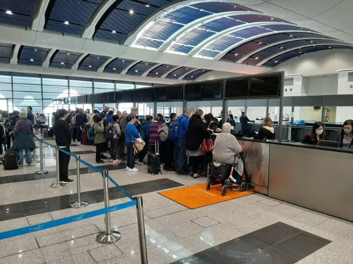
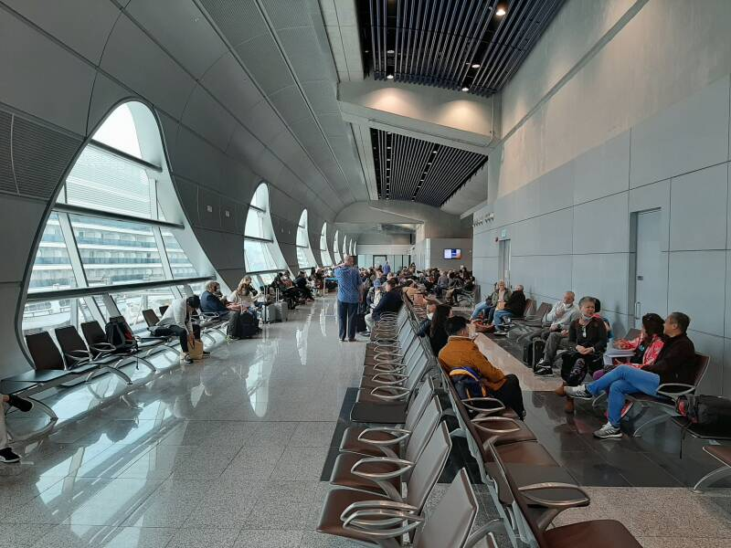
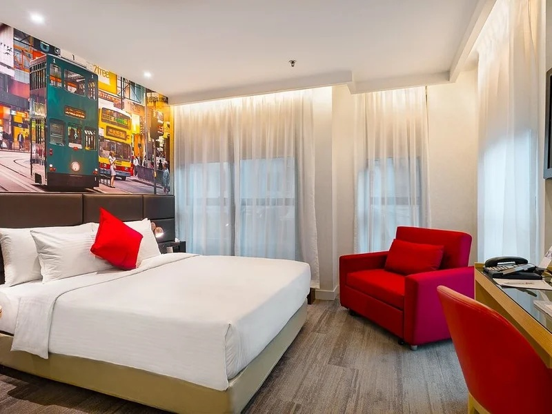
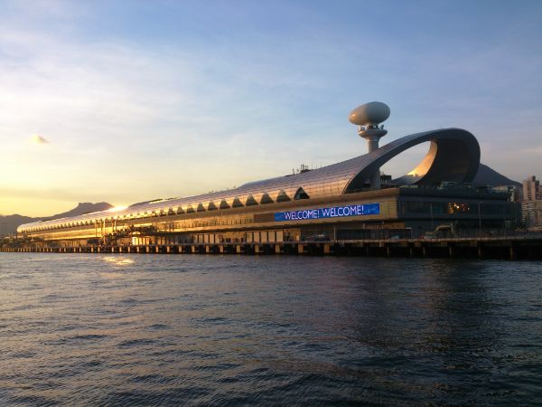
De eerste volledige dag op zee voelde als een zachte overgang van de drukte aan land naar het rustige ritme van het schip. We begonnen de ochtend met een uitgebreid ontbijt in de dining room, waar de bediening zoals altijd vriendelijk en attent was. Daarna woonden we een presentatie bij over Manilla, de haven waar we volgens planning morgen zouden aankomen. Het vooruitzicht van een nieuwe stad, een nieuwe cultuur en een excursie die al weken in onze agenda stond, gaf ons een prettig gevoel van verwachting.
Maar tijdens het galadiner, terwijl het orkest zacht speelde en de sfeer ontspannen was, werd de muziek abrupt onderbroken door de stem van de kapitein. Dat gebeurt zelden, en als het gebeurt, is het meestal geen goed nieuws. De zaal verstilde onmiddellijk.
De kapitein bracht het bericht dat de president van de Filipijnen had besloten dat alle schepen en vliegtuigen uit China per direct de toegang tot het land werd ontzegd. Daarmee viel ons geplande bezoek aan Manilla in één klap weg. De excursie die we hadden geboekt, konden we dus meteen uit ons hoofd zetten.
Het nieuws sloeg in als een bom, niet alleen bij ons, maar vooral bij de Filipijnse bemanningsleden. Voor velen van hen zou Manilla een langverwacht weerzien met familie betekenen — een moment waar ze maanden naar hadden uitgekeken. De teleurstelling was voelbaar, zelfs al probeerden ze professioneel te blijven. Het was hartverscheurend om te bedenken hoe dichtbij hun thuis was, en toch onbereikbaar.
De kapitein meldde dat we waarschijnlijk zouden uitwijken naar een haven in Taiwan, maar dat verdere details nog moesten volgen. Het werd steeds duidelijker dat deze reis anders zou verlopen dan gepland. De wereld veranderde snel, en wij dreven er middenin, letterlijk en figuurlijk.
De dag begon met een voorzichtig gevoel van optimisme. Tijdens het ontbijt hoorden we dat het schip koers had gezet richting Hualien, een havenstad aan de oostkust van Taiwan. We wisten niet precies wat we daar konden verwachten, maar op de website van de Westerdam zagen we dat er een excursie werd aangeboden. Zonder aarzelen boekten we die meteen. Het vooruitzicht om weer voet aan wal te zetten, hoe kort ook, voelde als een opluchting na alle onzekerheid van de afgelopen dagen.
Later op de ochtend woonden we een lezing bij over de tradities van dim sum — een onderwerp dat normaal gesproken alleen maar vrolijk stemt. Maar halverwege de presentatie klonk opnieuw de stem van de kapitein door de luidsprekers. De zaal verstilde onmiddellijk; iedereen wist inmiddels dat zulke onderbrekingen zelden goed nieuws brachten.
Hualien wilde ons niet ontvangen. De excursie die we nog geen paar uur eerder hadden geboekt, werd geannuleerd. De teleurstelling was voelbaar, maar inmiddels ook bijna vertrouwd. Het was alsof de reis zich voortdurend opnieuw moest uitvinden, en wij met haar.
De kapitein meldde dat we zouden uitwijken naar Kaohsiung, een grote havenstad in het zuiden van Taiwan. Volgens de laatste berichten zouden we daar twee dagen blijven. Maar gezien de gebeurtenissen van de afgelopen dagen durfden we nergens meer op te rekenen. De enige manier om met de situatie om te gaan, was door niet verder dan één dag vooruit te denken.
En zo voeren we verder, omringd door een kalme zee maar met een wereld in beweging om ons heen. Het werd steeds duidelijker dat deze reis een heel ander karakter zou krijgen dan we ooit hadden kunnen voorzien.
Gisteren kregen we te horen dat we in de BB King Blues Club volgnummers konden ophalen voor de gezondheidscontrole en paspoortcheck. Alleen was er niemand die erbij had verteld hoe laat dat precies zou gebeuren. Dus stonden we, nog voor de zon goed en wel was opgekomen, om half zeven paraat. Gelukkig bleek ons vroege opstaan niet voor niets: we konden als een van de eersten door de controle, wat ons een hoop wachttijd bespaarde.
Buiten de terminal gingen we op zoek naar een excursie, maar van de organisatie was geen spoor te bekennen. Wel stonden er talloze taxichauffeurs klaar, allemaal even enthousiast om ons mee te nemen. Eén van hen sprak redelijk Engels en nam spontaan de rol van tolk op zich voor zijn collega’s. Na wat vriendelijk onderhandelen kwamen we tot een akkoord en konden we op pad.
Onze eerste bestemming was het Fo Guang Shan‑complex, een indrukwekkend boeddhistisch centrum op ongeveer een uur rijden van Kaohsiung. De chauffeur reed met stevige overtuiging — waar 100 km/u was toegestaan, tikte hij zonder moeite de 140 aan. Maar de rit werd beloond: het Boeddha Museum was werkelijk adembenemend. Serene zalen, jade‑kunstwerken, geurige wierook en als hoogtepunt de gigantische gouden Boeddha die over het hele complex waakt. Het was een plek die rust uitstraalde, zelfs met de vele bezoekers om ons heen.
Daarna bracht de chauffeur ons naar wat hij enthousiast een “boulevard” noemde. In werkelijkheid bleek het een brede, drukke straat te zijn met winkels, verkeer en — tot onze verrassing — een Starbucks. De koffie smaakte uitstekend en gaf ons precies de energie die we nodig hadden om verder te gaan.
Onze volgende stop was een tempelcomplex gewijd aan een oorlogsheld, een plek vol symboliek en geschiedenis. Tot slot bezochten we het voormalige Britse consulaat, tegenwoordig een museum met een prachtig uitzicht over de haven. Het was een mooie afsluiting van een dag die heel anders begon dan gepland, maar uiteindelijk verrassend rijk bleek te zijn.
Ondanks de taalbarrière deed onze chauffeur zijn uiterste best om ons een onvergetelijke dag te bezorgen. Zijn enthousiasme, inzet en vriendelijkheid maakten de ervaring compleet — en dat is hem zonder twijfel gelukt.
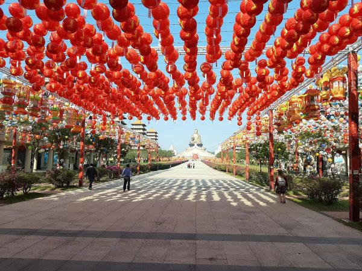
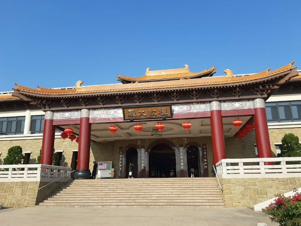
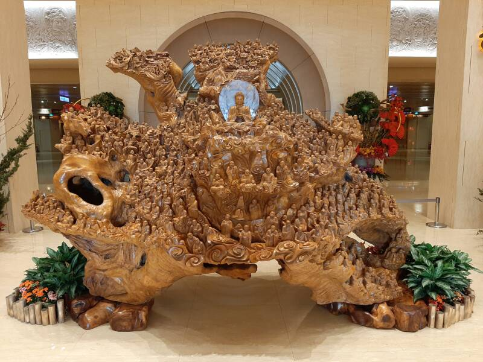
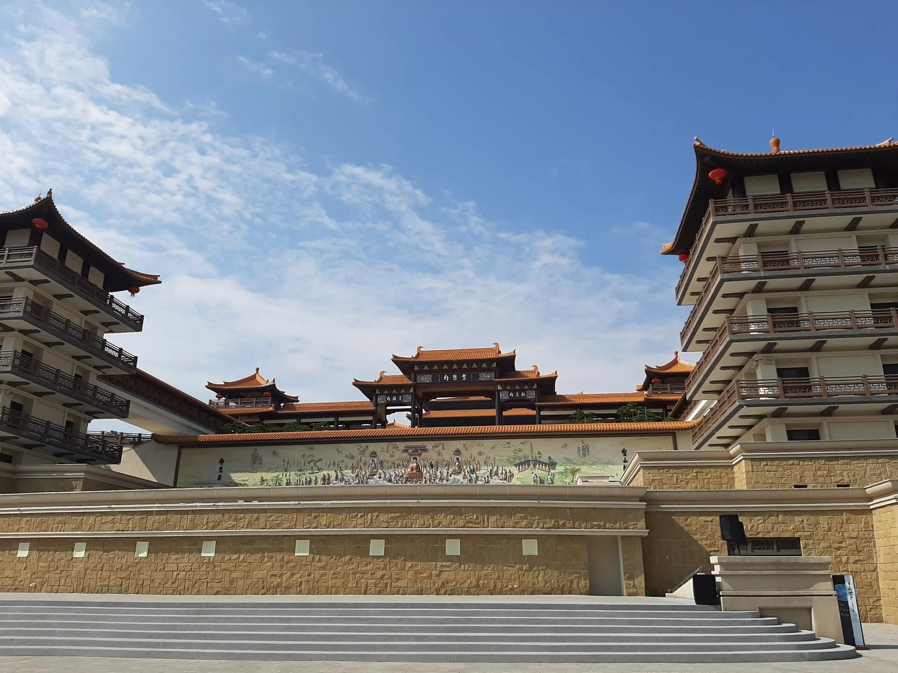
De dag begon vroeg — veel te vroeg eigenlijk. De wekker ging al om zes uur, omdat we om half acht zouden verzamelen voor een excursie die we hadden geboekt. Maar nog voordat we goed en wel wakker waren, zagen we een A4’tje onder de deur liggen. Dat kon maar één ding betekenen: slecht nieuws. Niet-urgente post wordt immers altijd in het brievenbusje naast de deur gedaan. Een brief onder de deur is nooit een goed teken.
In de brief stond dat er gisteren een ander cruiseschip aan dezelfde pier had gelegen, met aan boord een groot aantal Chinese passagiers. Bij één van hen was het coronavirus vastgesteld. Daardoor werd de hele pier onmiddellijk afgesloten. Niemand mocht van boord — geen passagiers, geen bemanningsleden. Onze excursie kon dus meteen worden geschrapt.
Om zeven uur gaf de kapitein een mondelinge update. Er was nog geen nieuwe route bekend, maar één ding stond vast: Taipei zou in ieder geval vervallen. De restricties golden voor alle Taiwanese havens. Het voelde alsof de wereld om ons heen steeds sneller op slot ging.
Later op de ochtend kwam er eindelijk duidelijkheid. We zouden koers zetten naar Ishigaki, een eiland in het uiterste zuiden van Japan. Daar zouden we overmorgen aankomen. Maar vertrekken konden we nog niet; eerst moest er afvalwater en olie worden overgeladen. Het was een vreemd idee dat we letterlijk vastlagen, wachtend op toestemming om verder te mogen.
Pas rond vier uur ’s middags kwamen de trossen los. De wind trok aan tot kracht zes, met uitschieters naar zeven. In de gangen hield iedereen zich stevig vast aan de relingen, terwijl het schip zacht maar onmiskenbaar begon te rollen. Toch bracht de avond wat afleiding: een uitstekende show van een Chinese illusionist, die met zijn rustige uitstraling en verbluffende trucs precies bood wat we nodig hadden — een moment van lichtheid in een dag vol onzekerheid.
Vanmorgen lag er een brief van kapitein Vincent Smit in ons postvak. Eindelijk kregen we een overzicht van de nieuwe route. Morgen zouden we aankomen in Ishigaki, waar we tot in de late middag zouden blijven. Daarna zouden we doorvaren naar Naha, waar we twee dagen zouden liggen.
Verder stond in de brief dat passagiers die hun cruise rechtstreeks bij HAL hadden geboekt, de mogelijkheid kregen om op 15 februari in Tokyo van boord te gaan. Hun vlucht zou kosteloos worden omgeboekt en ze zouden een vergoeding krijgen voor de niet-genoten cruisedagen.
Voor ons gold dat niet, omdat we via een reisbureau hadden geboekt. Toch stuurde ik een e-mail naar het bureau met de vraag wat het voor ons zou betekenen als we op de 15e in Tokyo van boord zouden stappen. Want eerlijk is eerlijk: als we morgen opnieuw geweigerd zouden worden, zou de gedachte om naar huis te gaan steeds aantrekkelijker worden.
Ondanks alle onzekerheid worden we aan boord uitstekend verzorgd. Maar het gebrek aan duidelijkheid begint te wegen. Om het leed wat te verzachten kreeg iedereen twee uur gratis internet. Ik wist dat zelfs te verdubbelen naar vier uur, waardoor ik dit bericht vanaf het schip kon versturen.
Alsof dat nog niet genoeg was, werd er vanmiddag een “happy hour” aangekondigd bij alle bars — en dit keer was het niet alleen happy, maar ook volledig gratis. Een onverwachte meevaller.
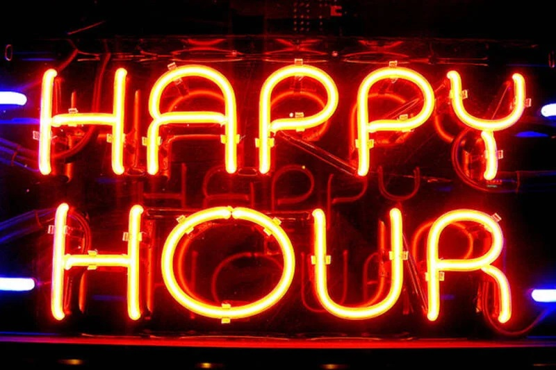
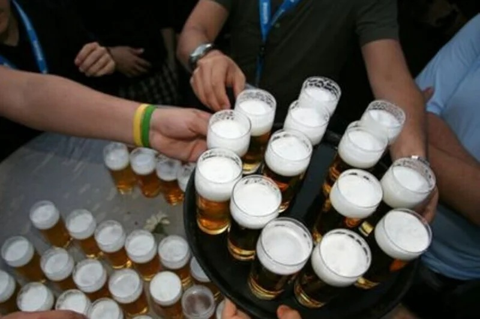
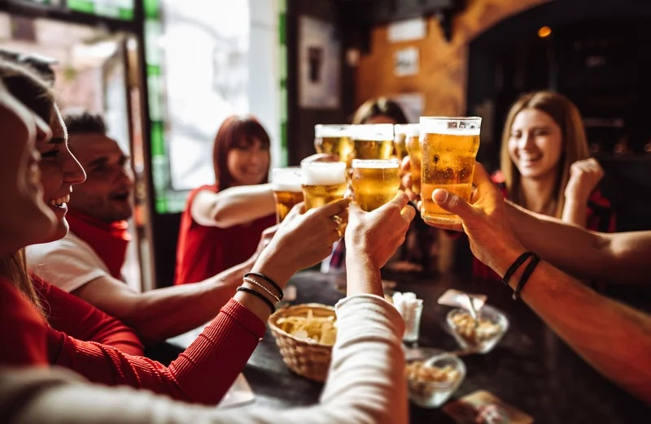
Gisteravond, tijdens het diner, stopte de muziek plotseling. Aan boord is dat zelden een goed teken, en ook nu bleek dat gevoel terecht. De haven waar we vanmorgen zouden afmeren kon ons niet ontvangen: er was onvoldoende medisch personeel beschikbaar om alle passagiers op het coronavirus te controleren. De kapitein meldde dat onze volgende bestemming daarom Naha in Japan zou worden.
Maar vanmorgen, rond zeven uur, klonk opnieuw de inmiddels vertrouwde stem van kapitein Smit door de luidsprekers — een stem die de laatste dagen vooral slecht nieuws bracht. Zijn boodschap was kort maar ingrijpend: ook Naha wilde ons niet ontvangen. Sterker nog, alle Japanse havens die op onze route stonden, hadden ons geweigerd.
Daarmee werd de hele cruise geannuleerd. Niet alleen voor de passagiers die op 15 februari zouden ontschepen, maar ook voor iedereen die tot 29 februari aan boord zou blijven — wij dus. Later zouden we horen waar we naartoe zouden varen en waar we uiteindelijk van boord konden om naar huis te vliegen.
Tijdens het ontbijt merkten we dat het schip geen rechte koers meer voer. Op de informatieschermen zagen we dat de noordelijke koers was veranderd in een zuid-zuidwestelijke. Onder de passagiers ontstond meteen een levendige discussie. De meesten dachten dat we onderweg waren naar Guam, een Amerikaans eiland met een militaire basis en een vliegveld. Als we deze koers zouden aanhouden, zouden we daar in ongeveer vier dagen kunnen aankomen.
In de loop van de dag hoorden we dat er overleg gaande was met zowel Amerikaanse als Nederlandse autoriteiten. Meer dan afwachten konden we niet doen. De onzekerheid hing als een sluier over het schip, maar tegelijkertijd was er een gevoel van saamhorigheid: iedereen zat in hetzelfde schuitje — letterlijk.
In de avond kwam er een nieuwe update. De koers was opnieuw gewijzigd; we voeren nu zuidwest. Guam viel dus af als optie. Mogelijke bestemmingen waren Singapore of Bangkok, al was het onzeker of Singapore zijn grenzen inmiddels had gesloten. Het voelde alsof we een pion waren op een schaakbord dat voortdurend van opstelling veranderde.
We hoopten vooral dat er niet gerekend zou worden met een incubatietijd van veertien dagen, want dan zouden we nog minstens een week op zee zitten. En als men zou tellen vanaf de laatste haven die we hadden aangedaan, zelfs nog langer.
De kapitein verzekerde ons dat er voldoende brandstof aan boord was. En minstens zo belangrijk: er was genoeg voedsel en drank voor de komende dagen. Dat bleek wel toen we vanavond voor het diner een glas Kir Royale kregen aangeboden — een klein gebaar dat precies op het juiste moment kwam.
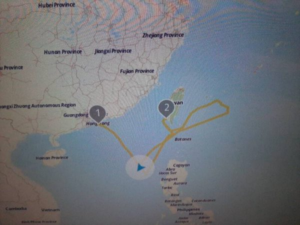
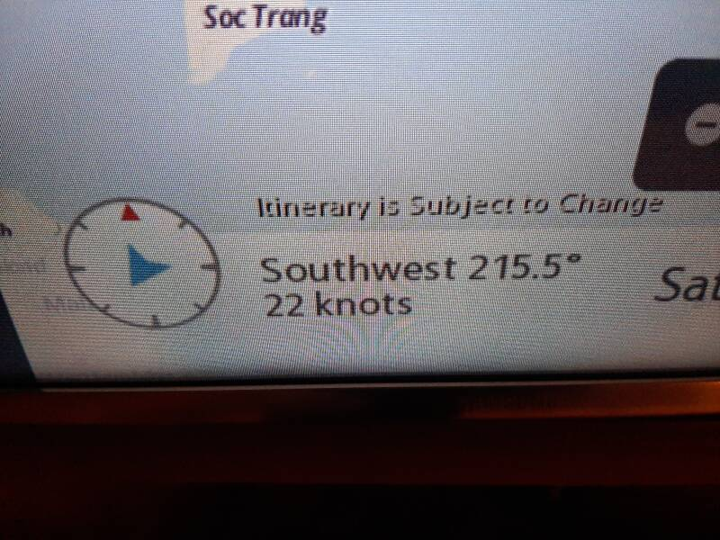
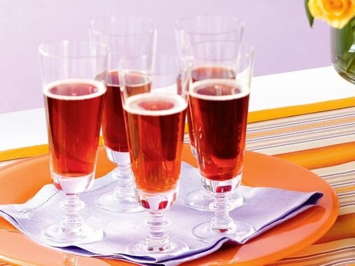
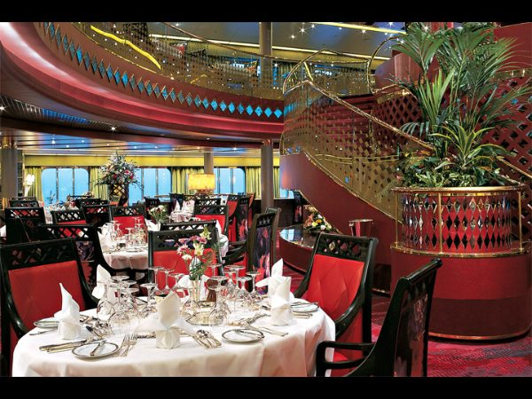
De nacht was onrustig. Niet door de zee, maar door de onzekerheid die als een deken over het schip lag. Iedereen vroeg zich af waar we naartoe zouden gaan en hoe lang deze situatie nog zou duren. Tijdens het ontbijt hing er een merkbare spanning in de dining room. Mensen spraken zachter dan normaal, alsof ze bang waren het lot uit te dagen.
Op de informatieschermen zagen we dat de koers opnieuw was aangepast. Het schip voer nu duidelijk zuidwest, maar zonder officiële mededeling bleef het gissen. De gesprekken gingen alle kanten op: Singapore, Bangkok, misschien zelfs Manila als de regels zouden versoepelen. Niemand wist het zeker, en dat maakte het alleen maar onrustiger.
In de loop van de ochtend kwam er een korte update van de kapitein. Er werd intensief overleg gevoerd met verschillende landen, maar er was nog geen toestemming om ergens aan te meren. Zijn boodschap was vriendelijk, maar bood weinig houvast. We moesten geduld hebben — iets wat steeds moeilijker werd.
De rest van de dag verliep rustig. De bemanning deed zichtbaar haar best om de sfeer aan boord goed te houden. In de bars werden kleine hapjes uitgedeeld en in het theater was een extra voorstelling ingepland. Het voelde bijna alsof men probeerde te voorkomen dat de onrust zou overslaan.
Toch bleef de onzekerheid knagen. Hoe lang konden we nog rondvaren zonder bestemming? Hoeveel havens zouden ons nog weigeren? En waar zouden we uiteindelijk van boord kunnen? Het waren vragen zonder antwoorden, en dat maakte de situatie des te zwaarder.
Tijdens het diner kregen we opnieuw een glas Kir Royale aangeboden — een klein gebaar, maar precies wat nodig was om de stemming iets te verlichten. De bemanning bleef vriendelijk en professioneel, ondanks dat ook zij niet wisten wat er zou gebeuren. Hun kalmte werkte aanstekelijk.
We sloten de dag af met hetzelfde gevoel waarmee we hem begonnen: afwachten. De zee was kalm, maar de situatie allesbehalve.
De nacht bracht weinig duidelijkheid. We voeren nog steeds zonder bevestigde bestemming en dat drukte merkbaar op de sfeer aan boord. Tijdens het ontbijt werd er zachtjes gepraat, alsof iedereen probeerde te begrijpen wat er achter de schermen gebeurde. De onzekerheid hing als een dunne mist over de dining room.
Op de informatieschermen zagen we dat de koers opnieuw licht was aangepast. Het schip bewoog nog steeds in zuidwestelijke richting, maar zonder officiële toelichting bleef het gissen. De gesprekken onder de passagiers gingen alle kanten op: sommigen dachten aan Singapore, anderen aan Bangkok, en weer anderen opperden kleinere havens in Zuidoost‑Azië. Niemand wist het zeker, en dat maakte de speculaties alleen maar levendiger.
In de loop van de ochtend kwam er een korte mededeling van de kapitein. Er werd intensief overleg gevoerd met meerdere landen, maar er was nog geen toestemming om ergens aan te meren. Zijn boodschap was vriendelijk, maar gaf weinig houvast. We moesten geduld hebben — opnieuw.
De rest van de dag kabbelde rustig voorbij. De bemanning deed zichtbaar haar best om de stemming goed te houden. In de lounges werden extra activiteiten georganiseerd en in het theater stond een extra voorstelling gepland. Het voelde alsof men probeerde te voorkomen dat de onzekerheid de overhand zou krijgen.
Toch bleef de vraag in ieders gedachten hangen: hoe lang zouden we nog ronddobberen zonder bestemming? En waar zouden we uiteindelijk van boord kunnen? Het waren vragen zonder antwoorden, en dat maakte de situatie des te zwaarder.
Tijdens het diner kregen we opnieuw een glas Kir Royale aangeboden — een klein gebaar dat precies genoeg was om de sfeer wat te verzachten. De bemanning bleef vriendelijk en professioneel, ondanks dat ook zij niet wisten wat de komende dagen zouden brengen. Hun kalmte werkte aanstekelijk.
We sloten de dag af zoals we hem begonnen: met geduld en afwachting. De zee was kalm, maar de situatie bleef onzeker.
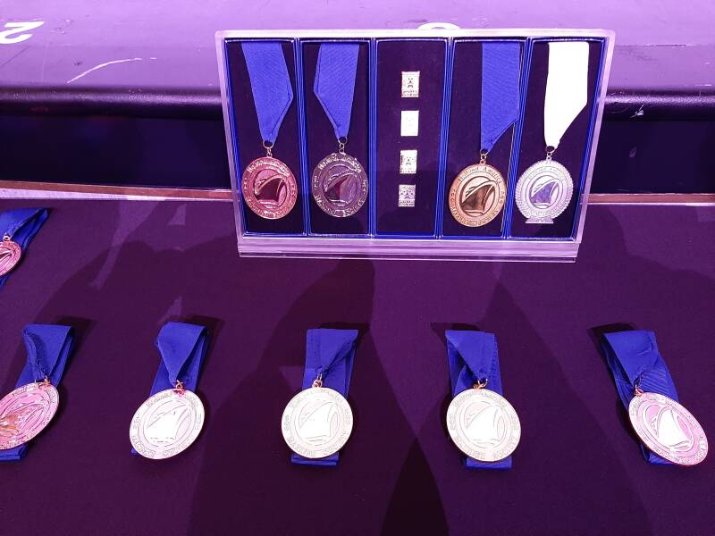
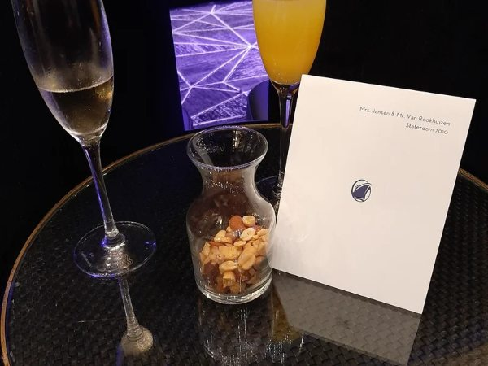
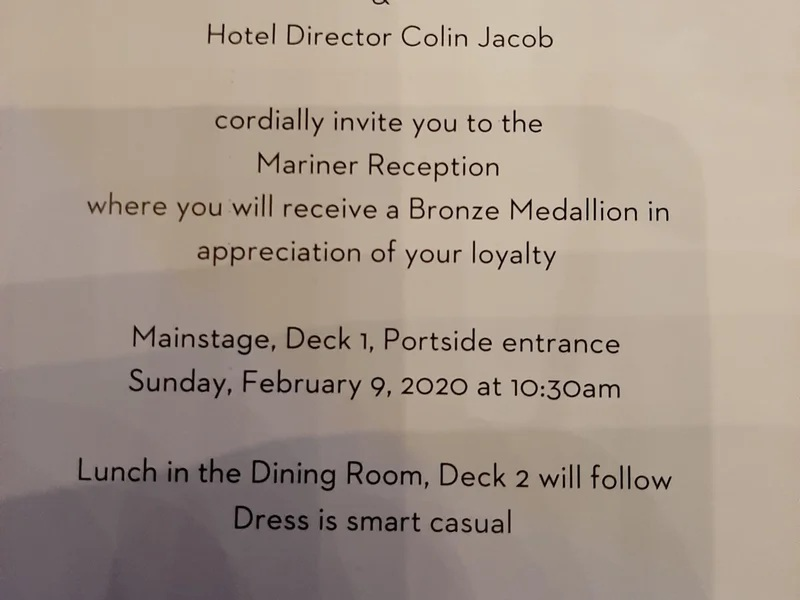
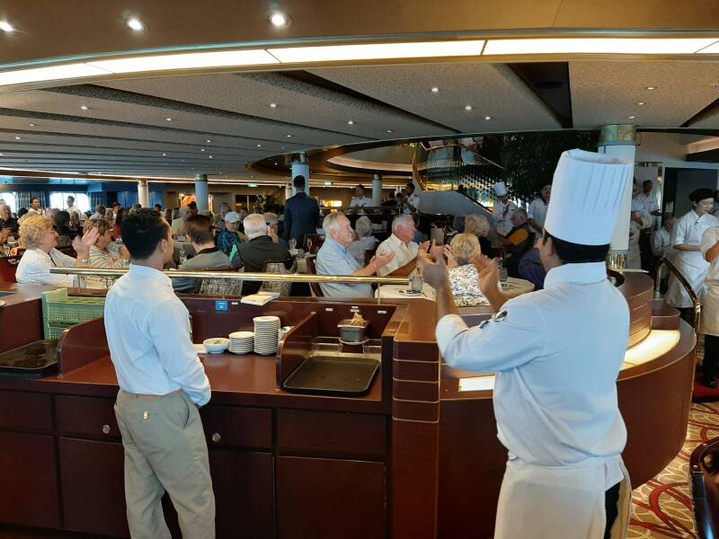
Vanmorgen om negen uur begon in de theaterzaal een live verslag van de Oscaruitreikingen in Hollywood. Op het grote scherm konden we de ceremonie volgen, terwijl er een ontbijtbuffet klaarstond met koffie, sap en allerlei lekkernijen. Het was een welkome afleiding: even geen speculaties over routes of havens, maar gewoon genieten van film, muziek en de glitter van Hollywood.
We werden slechts één keer onderbroken door een mededeling van de kapitein. Hij meldde dat er niets nieuws te melden viel en dat hij pas in de middag hoopte meer duidelijkheid te kunnen geven. Ondertussen zagen we op de informatieschermen dat de koers opnieuw was gewijzigd. We voeren niet langer richting Singapore, maar meer westelijk. Dat leek erop te wijzen dat Bangkok een mogelijke bestemming werd.
Rond vier uur kwam eindelijk de langverwachte update. De kapitein bevestigde dat ons vermoeden juist was: we zetten koers naar Bangkok. De verwachting was dat we daar donderdag zouden aankomen. Voor het eerst in dagen voelde het alsof er weer een richting was — letterlijk en figuurlijk.
Voor het zover was, moesten er nog enkele stappen worden genomen. Later op de dag zouden we in de rij moeten staan voor een temperatuurcontrole. Daarnaast moest er opnieuw een gezondheidsverklaring worden ingevuld. Ook zouden we op korte termijn een formulier ontvangen waarin we onze wensen voor de terugreis konden aangeven.
Na dagen van onzekerheid voelde het bijna als opluchting om eindelijk te weten waar we naartoe gingen en hoe het einde van de cruise eruit zou zien. Hoe de vlucht precies geregeld zou worden, zouden we later horen. Hopelijk zou dat in het volgende bulletin staan.
We begonnen de dag goed met opnieuw een “sunrise stretch”. En omdat we toch in de buurt waren, deden we als cooling‑down nog een stukje fietsen en hardlopen. Daarna volgde het ontbijt en hadden we even tijd om de administratie bij te werken. Er moest opnieuw een taxi vanaf Schiphol worden geregeld en we probeerden goede stoelen te reserveren voor de terugvlucht.
Want… we gingen ervan uit dat we op vrijdag 14 februari om 12.15 uur vanuit Bangkok naar huis zouden vliegen. Alles leek rond te zijn.
Maar in de loop van de ochtend kwam de brenger van slecht nieuws weer aan het woord.
De Thaise minister van Volksgezondheid, Anutin Charnvirakul, had op Facebook gemeld dat hij géén toestemming had gegeven aan Holland America Line om de Westerdam in Bangkok te laten afmeren. En daarmee waren we opnieuw niet welkom.
Er werd op hoog niveau overleg gevoerd om het schip toch toegang te geven tot Bangkok. Zowel de Nederlandse als de Amerikaanse regering waren hierbij betrokken. Ondertussen lieten de informatieschermen nog steeds zien dat we richting Bangkok voeren, maar zekerheid was er niet. Van de kapitein hadden we verder niets meer vernomen.
In de krant lazen we dat de Thaise overheid wél toestemming had gegeven om voedsel en medicijnen aan boord te brengen. Ook mocht er gebunkerd worden. Dat gaf in elk geval enige geruststelling: we zouden niet zonder voorraden komen te zitten.
En dus… wachten we opnieuw af. De zee was kalm, maar de situatie allesbehalve.
Vanmorgen was er in het theater een speciale “crew’s farewell show”. Zo’n voorstelling wordt normaal gesproken gegeven wanneer een cruise ten einde loopt, al is daar nu weinig zekerheid over. Op het podium stonden enkele honderden bemanningsleden. De entertainment director en de maître d’hôtel hielden een toespraak en spraken openhartig over de situatie waarin we ons bevinden. Het werd een emotioneel moment; beide sprekers hielden het niet droog, en in de zaal werd het muisstil.
In de middag, tijdens een filmvoorstelling, nam de kapitein het woord. De situatie was als volgt: we waren onderweg naar een ankerplaats bij een eiland waarvan de naam voor ons niet goed verstaanbaar was. Het lag zo’n 27 mijl van de plek waar we aanvankelijk naartoe zouden gaan. Daar zouden we proviand en brandstof innemen en verdere instructies afwachten. Op het eiland bevond zich een marinebasis.
We werden inmiddels al enkele uren begeleid door een marineschip dat aan bakboordzijde met ons meevoer. Tijdens het diner zagen we plotseling dat het marineschip achter de Westerdam wegdraaide. Vrijwel direct daarna klonk de inmiddels vertrouwde stem van kapitein Vincent Smit door de luidsprekers.
Het werd een lange mededeling, maar de kern was duidelijk: het schip had de koers 180 graden verlegd en voer nu richting Sihanoukville in Cambodja. Daar zouden we morgenochtend om zeven uur aankomen. Als er vluchten geregeld konden worden, zouden we van boord gaan en naar Vietnam vliegen, en vandaaruit verder naar huis.
Het kon dus nog even duren voordat we daadwerkelijk van boord konden. Wanneer we thuis zouden zijn, was al helemaal onzeker. Ondertussen waren we druk bezig met het omboeken van de vlucht, het regelen van een taxi en alle andere praktische zaken die daarbij kwamen kijken. De opluchting dat er eindelijk een bestemming was, mengde zich met de spanning van alles wat nog geregeld moest worden.
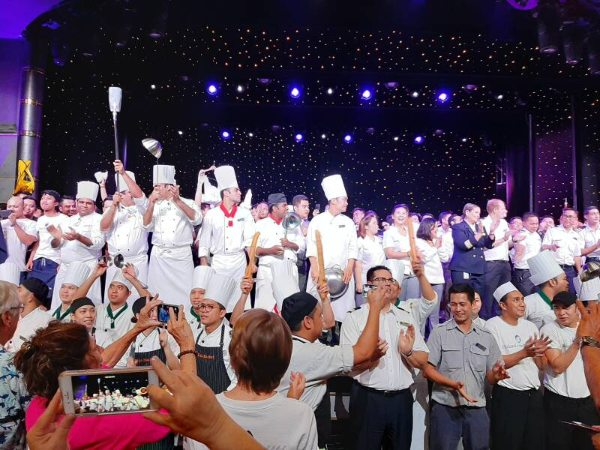
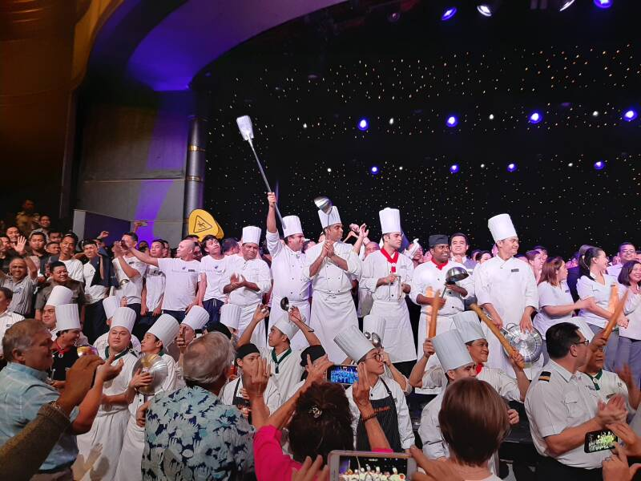
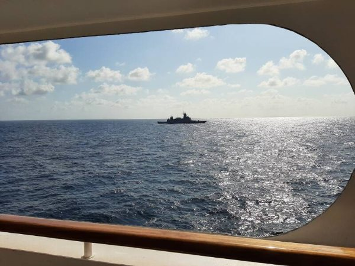
Vanmorgen rond zeven uur ging het anker uit. Voor ons lag de stad Sihanoukville, duidelijk zichtbaar maar nog altijd onbereikbaar. En zo begon het grote wachten — een terugkerend thema van de afgelopen dagen, maar nu met het vasteland eindelijk in zicht.
Naast het schip werd een ponton geplaatst en even later meerde er een klein vaartuig af dat vermoedelijk de nodige autoriteiten aan boord bracht. Kort daarna werd iedereen verzocht zijn paspoort in te leveren zodat er een visum kon worden aangebracht. Toen we terugkeerden naar de hut lag daar een nieuwe gezondheidsverklaring klaar die opnieuw ingevuld moest worden. Later in de middag konden we de paspoorten weer ophalen, nu voorzien van het felbegeerde visum.
Ondertussen bleef het onduidelijk wanneer we daadwerkelijk zouden afmeren. Over vliegtickets werd al helemaal niet gesproken. De informatieschermen gaven geen nieuwe aanwijzingen en van de kapitein hadden we nog niets gehoord. Het enige wat we konden doen, was wachten en hopen dat er achter de schermen vooruitgang werd geboekt.
Pas tegen de avond kwam er beweging in het schip. Heel langzaam voeren we richting de pier van Sihanoukville en meerden we af. Daar liggen we nu — maar van boord mogen we nog niet. Verdere mededelingen zouden volgen, al was het de vraag wanneer.
In Time Magazine lazen we dat de Westerdam inderdaad enkele dagen geleden onderweg was naar Guam, maar dat ook daar toestemming was geweigerd. Het maakte nog eens duidelijk hoe uitzonderlijk en onzeker deze situatie was. Dat we nu in Cambodja lagen, voelde als een onverwachte wending in een reis die al zoveel onverwachte wendingen had gekend.
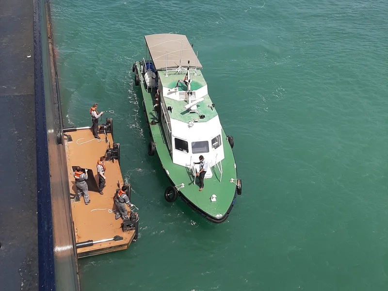
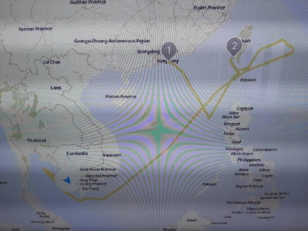
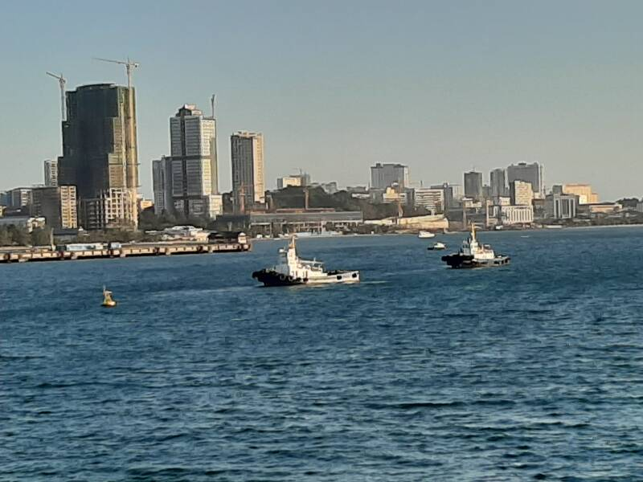
Vanochtend om 06.15 uur klonk de stem van Vincent Smit uit de luidspreker boven ons bed. Wakker worden was dus geen keuze. Hij kondigde aan dat de eerste passagiers van boord konden gaan en zich naar de gereedstaande bussen moesten begeven.
Omdat ook de minister-president van Cambodja aanwezig zou zijn, stelde hij voor dat we met z’n allen naar dek 3 zouden gaan om hem te verwelkomen en onze dankbaarheid te tonen. Daarbij werd gevraagd de Cambodjaanse sjaal mee te nemen die gisteren op ons bed was gelegd. Dat zou het gebaar nog feestelijker maken.
Wij hebben daar niet aan meegedaan. We hadden al gepland om naar de sunrise stretch te gaan, en dat hebben we dan ook gedaan.
Er stonden nog wat activiteiten op het programma, maar niets wat ons echt aansprak. Daarom zijn we aan dek gaan zitten om te lezen en de administratie bij te werken. Ondertussen volgden de aankondigingen elkaar in hoog tempo op. Ik was net gaan informeren of we misschien aan wal mochten — dat bleek niet mogelijk — en nog geen twee minuten later werd omgeroepen dat het wél kon, inclusief shuttlebus. Even later kwam er weer een bericht: eerst registreren. En weer even later: ook een temperatuurcontrole was verplicht.
En zo ging het maar door.
Er kwam ook een onverwachte mededeling dat passagiers die rond 16.00 uur zouden vertrekken, nu al om 12.00 uur van boord konden omdat er een eerdere vlucht was gevonden.
Het is inmiddels 11.00 uur en wij weten nog steeds niets — zelfs niet wanneer we zullen vliegen. Het is om wanhopig van te worden.
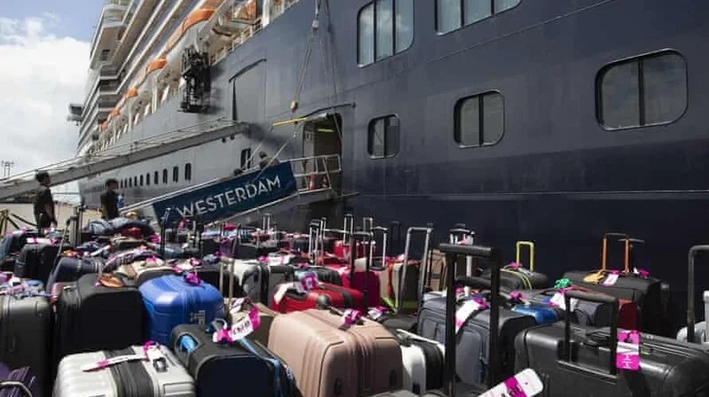
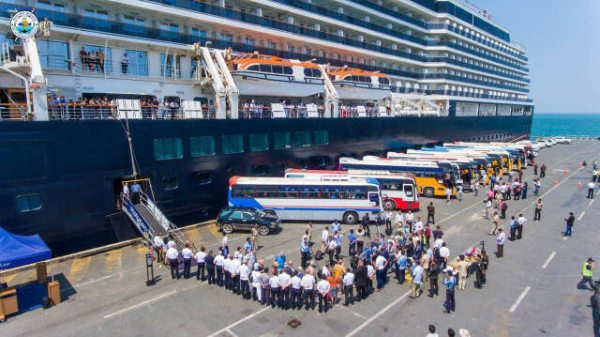
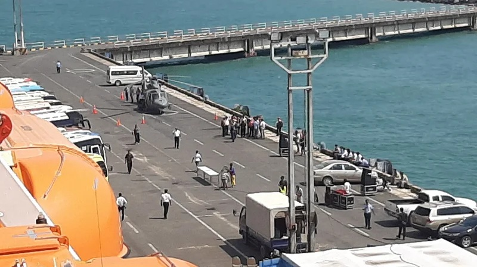
Vanmorgen zagen we opnieuw groepen passagiers klaarstaan om het schip te verlaten. Omdat wij nog steeds geen bericht hadden ontvangen over wanneer wij van boord zouden mogen, ben ik gaan informeren bij Guest Relations. Daar werd verteld dat er een brief zou worden bezorgd met de details. Naar verwachting zouden we vanavond of morgen naar huis kunnen vliegen.
Toen we in de middag nog steeds niets hadden vernomen, zijn we opnieuw langsgegaan. Dit keer kregen we te horen dat we vanavond een brief zouden ontvangen en dat we morgen naar huis zouden gaan. Meer details waren er niet.
De Westerdam begint nu echt op een spookschip te lijken — als het dat al niet was. Er zijn nog ruim honderd passagiers aan boord, waarvan het merendeel Nederlanders. Met sommigen van hen raakten we in gesprek, en het is duidelijk dat de frustraties toenemen. De onzekerheid, de tegenstrijdige berichten en het gebrek aan duidelijke informatie maken mensen boos en moedeloos.
Het is inmiddels 18.30 uur en we weten nog steeds niets…
Nu is de chaos compleet. We kregen zojuist een update, en die kwam ongeveer hierop neer: de passagiers die momenteel in Phnom Penh in een hotel worden vastgehouden, worden opnieuw medisch onderzocht. Als blijkt dat zij virusvrij zijn, mogen ze doorreizen — mits er een vlucht gevonden wordt.
Wanneer het medische team daar klaar is, reist het naar Sihanoukville om de overgebleven 236 passagiers aan boord te onderzoeken. Als ook dat in orde blijkt, moet er voor deze groep eveneens een vlucht worden geregeld. Het lijkt er sterk op dat we hier nog wel even zitten.
Omdat we vermoedden dat het nog lang zou duren, hebben we vanmorgen gevraagd of we een grotere hut konden krijgen. Er is plek genoeg nu, zou je denken. Normaal gesproken is een binnenhut prima — je bent er alleen om te slapen — maar in deze situatie ligt dat anders. Ons werd toegezegd dat we na de update een grotere hut zouden krijgen.
Na de mededeling gingen we samen met een Nederlands echtpaar naar Guest Relations. Zij wilden een Nederlandse officier spreken om hun wensen voor de terugreis kenbaar te maken. Er kwam een Nederlandse officier aan de balie, maar er hing al een lichte irritatie in de lucht. Ze merkte op dat vooral de Hollanders klaagden.
De sfeer werd er niet beter op toen wij vroegen naar de beloofde grotere hut. Die werd ons toegezegd — binnen een uur. Toen Ingrid opmerkte dat ze moe was van de hele situatie, reageerde de officier dat zij óók moe was. Mijn antwoord dat dit niet te vergelijken was, viel niet in goede aarde. Op haar vraag waarom niet, zei ik: “U wordt ervoor betaald om moe te zijn, en wij niet.” Dat schoot duidelijk in het verkeerde keelgat. Ze vond het een onvriendelijke opmerking, draaide zich om en liep weg.
Volgens mij was het niet meer dan een constatering, maar zij zag dat anders. We hoorden later van anderen dat ook zij zich niet serieus genomen voelden. Eén van hen zei zelfs: “Ik had haar wel over de balie willen trekken.” Het lijkt erop dat dit soort situaties vaker gaat voorkomen.
Vanmorgen heb ik het ministerie van Buitenlandse Zaken in Den Haag gebeld. Ik heb de situatie uitgelegd en formeel om hulp gevraagd. Ik heb onze gegevens achtergelaten en wacht verdere ontwikkelingen af.
Omdat het me verstandig leek om meer Nederlanders op deze mogelijkheid te wijzen, zijn we in het restaurant op zoek gegaan naar landgenoten. We vonden er veertien, die allemaal hun naam wilden doorgeven. Daarna heb ik het ministerie opnieuw gebeld en de lijst doorgegeven. Nu wachten we tot de Nederlandse consul of een ambtenaar contact opneemt, zodat we hopelijk aan boord een gesprek kunnen hebben.
Er is eindelijk een beetje goed nieuws — iets wat de laatste tijd zeldzaam is. Na meerdere bezoeken aan Guest Relations hebben we dan toch een ruimere hut met balkon gekregen. Tijdens het laatste gesprek was er wel wat overredingskracht nodig. De medewerkster beweerde bij mijn derde bezoek nergens van te weten, terwijl eerder was toegezegd dat de hut tussen zes en zeven uur beschikbaar zou zijn. Toen ik om 19.15 uur opnieuw dreigde te worden afgescheept, heb ik duidelijk gemaakt dat ik niet zou vertrekken voordat het geregeld was. Binnen een minuut werd ik gevraagd mee te lopen naar een andere hut. Als we tevreden waren, konden we verhuizen.
En zo stonden we tien minuten later in een ruimere hut, mét balkon. Eindelijk konden we naar buiten kijken — een klein maar waardevol gevoel van vrijheid.
Vanmorgen zat ik op het balkon toen er een helikopter overkwam en landde op de pier. Later volgden er nog twee, samen met een kleine colonne auto’s, ambulances en een brandweerwagen. Het was duidelijk dat er iets groots gaande was, al wist niemand precies wat.
Bij het ontbijt bestelden we bruinbrood, maar dat bleek op te zijn. Nu wordt het serieus — al schijnt er nog wel voldoende wijn aan boord te zijn. Tijdens het diner, en soms zelfs tijdens de lunch, krijgen we al een week lang meerdere glazen aangeboden. Het is een merkwaardige balans tussen luxe en onzekerheid.
Later op de dag sprak “het orakel” weer. Zijn toespraak was zo lang dat hij zelf aangaf hem deze keer niet te herhalen, iets wat hij normaal altijd deed. Het belangrijkste nieuws was dat de mensen die getest waren, negatief waren bevonden. In de loop van de dag zou men beginnen met het testen van de overige passagiers en de crew. Men verwachtte dat de eerste mensen morgenavond van boord zouden kunnen. Wij hebben daar weinig vertrouwen meer in, maar we zullen het zien.
We kregen ook bericht van De Telegraaf: zij gaan een deel van het interview dat we gisteren hebben gegeven publiceren. Het voelt vreemd om midden in deze situatie ineens onderwerp van nieuws te zijn.
We proberen de dagen zo goed mogelijk door te komen, al is het aanbod aan activiteiten wat beperkt. Vanmiddag deden we mee aan een pubquiz. Daarna trad de BB King Blues Band op, en er konden gratis drankjes worden besteld. Dat bleek niet eens nodig — zodra het glas half leeg was, stond er al een nieuwe naast. Het werd al snel erg gezellig.
Direct na het optreden kwam eindelijk de langverwachte aankondiging van Vincent. We zouden per hutnummer worden afgeroepen voor het aangekondigde onderzoek. We besloten eerst te gaan eten. Toen we net klaar waren, werd ons hutnummer omgeroepen. In de wachtruimte hoefden we nauwelijks te zitten: we waren meteen aan de beurt. Er werd een monster genomen uit het neusslijmvlies en uit de keelholte.
En nu… wachten we opnieuw af.
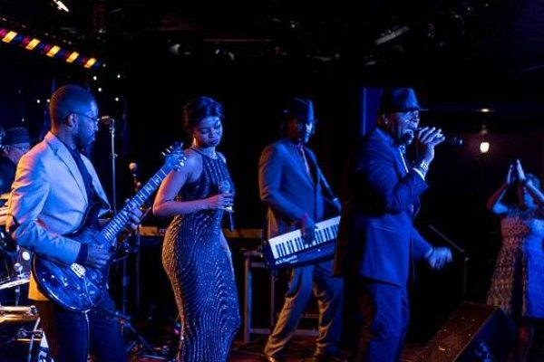
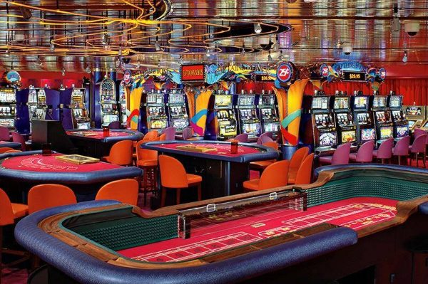
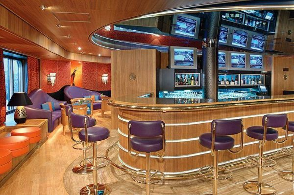
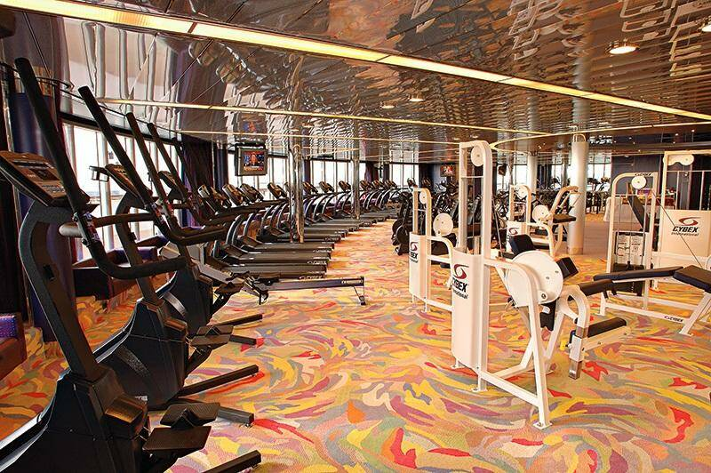
We zitten er een beetje doorheen en hebben vanochtend uitgeslapen. Geen yoga bij zonsopkomst op het achterdek vandaag. Na het ontbijt, gevolgd door een kort dutje, zijn we naar de BB King Club gegaan voor een kookdemonstratie van de Indiase chef-kok.
Halverwege de les klonk opnieuw de stem van Vincent — en opnieuw was het geen goed nieuws. Als de tests van gisteren allemaal negatief blijken, wordt het alsnog een enorme uitdaging om ons thuis te krijgen. Dat was het natuurlijk al, maar nu komt erbij dat verschillende luchthavens in de regio ons niet willen ontvangen. Kuala Lumpur is er één van, en dat was juist de luchthaven vanwaar onze oorspronkelijke intercontinentale vlucht zou vertrekken.
Na dit bericht heb ik Buitenlandse Zaken in Den Haag weer gebeld. Ik vroeg waarom er geen contact met ons werd opgenomen en hoe men ons denkt bij te staan. Na lange wachttijd kreeg ik te horen: “Ik geef u het telefoonnummer van de consul ter plaatse, dan kunt u die bellen.” Uiteraard heb ik dat meteen gedaan, maar verder dan een voicemail kwam ik niet. Ik heb luid en duidelijk laten weten dat we het zat zijn om niet gehoord te worden, en mijn telefoonnummer en e-mailadres achtergelaten. We hopen er maar het beste van — al doen we dat inmiddels al weken.
Vanmiddag was er weer een pubquiz. Eén van de vragen was welke lading twee Chinese zeilschepen in de 19e eeuw vervoerden tijdens een race naar Europa. Toen ik “Corona” riep, werd dat niet goedgekeurd.
Vanavond dineren we in de Pinnacle Grill, het specialiteitenrestaurant waarvoor normaal een toeslag geldt. Gisteren, tijdens het diner in de dining room, werden we daarvoor uitgenodigd.
Gisteren kregen we een uitstekend diner aangeboden: een viergangen keuzemenu met bijpassende wijnen. Tijdens het eten kwam er een heer aan ons tafeltje staan die zich voorstelde als Frits, afkomstig van het hoofdkantoor van HAL in Seattle. Er ontstond een geanimeerd gesprek waarin we uitgebreid onze mening over de situatie konden delen. Veel nieuwe informatie leverde het niet op — iedereen doet zijn uiterste best om alles tot een goed einde te brengen — maar het was prettig om gehoord te worden. Toen Frits op mijn telefoon iets in het Nederlands zag, bleek hij zelf ook Nederlander te zijn.
Daarna volgde een drukke stroom aan mails, telefoontjes en WhatsApp-berichten. Er staat inmiddels een artikel over ons in het AD, en binnenkort verschijnt er ook iets op nu.nl. Zelfs het lokale weekblad Groot Rijswijk is van plan iets te plaatsen. Ondertussen hebben verschillende familieleden de 24-uurs alarmlijn van Buitenlandse Zaken gebeld om te informeren naar onze situatie.
09.00 uur — Breaking news!
Zojuist werd omgeroepen dat we van boord gaan. Onze koffers moeten vóór tien uur op de gang staan. Daarna kunnen we nog een vroege lunch gebruiken. Men verwacht rond 12.30 uur te beginnen met ontschepen. We worden dan met bussen naar Phnom Penh gebracht — een rit van zes uur. Daar zullen we in een hotel worden ondergebracht en krijgen we nadere informatie over onze vlucht(en).
Om twaalf uur werden we verzocht plaats te nemen in één van de klaarstaande bussen. Bij de gangway kregen we een voedselpakket mee en liepen we door een haag van bemanningsleden en lokale hoogwaardigheidsbekleders. Er werd gekust en omhelsd, bloemen werden uitgewisseld en overal werden foto’s gemaakt — heel veel foto’s. Iedereen moest met iedereen op de foto.
Om 13.00 uur vertrokken we. De colonne bestond uit zeven bussen, voorafgegaan door een auto met zwaailicht en sirene. Daarachter reden nog drie auto’s met ongetwijfeld VIP’s aan boord. Na bijna zes uur rijden kwamen we aan bij het hotel, waar we met zang, dans en een drankje werden ontvangen. Ook hier draaiden de camera’s volop.
Na de onvermijdelijke temperatuurcontrole konden we eindelijk naar onze kamer. We bleken in een heuse suite te logeren: een kamer zo groot als een balzaal, een extra slaapkamer, een zitkamer met tv, een complete keuken en twee badkamers. Na alle ellende en de barre busreis voelde het als een kleine beloning.
Straks is er een meeting waarin we hopelijk horen wanneer we gaan vliegen.
In de meeting die zojuist plaatsvond, werd eigenlijk alleen gemeld dat er morgen om negen uur opnieuw een bijeenkomst is. We moeten zorgen dat de koffers gepakt zijn, want het zou kunnen dat we meteen moeten afreizen.
Maar… het kan ook vrijdag worden.
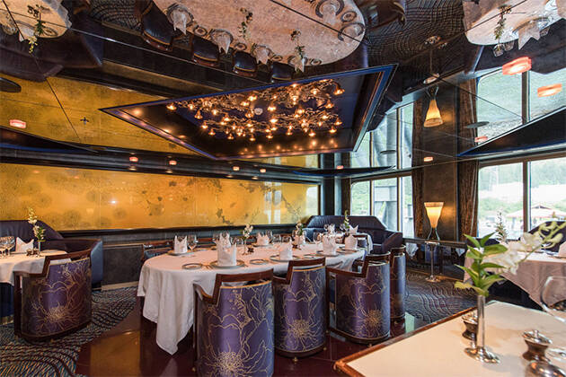
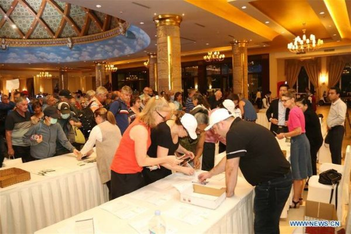
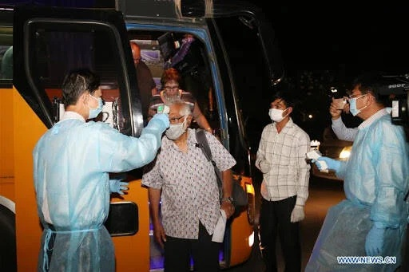
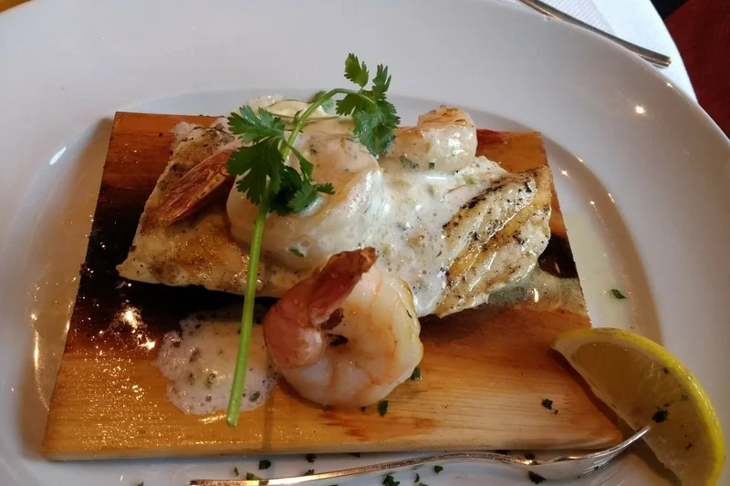
Na een goed ontbijt en een korte ochtendwandeling was het om negen uur tijd voor de meeting. Al snel werd duidelijk hoe de dag zou verlopen: de kamernummers die op de billboards stonden vermeld, zouden vandaag nog vertrekken — eerst naar Istanbul. Wat er daarna zou gebeuren, wist niemand, maar in ieder geval kwamen we dan een stuk dichter bij huis.
En ja, ons nummer stond op de lijst.
We moesten snel onze koffers ophalen, die gelukkig al ingepakt klaarstonden. Terug in de lobby bleek het echter een enorme chaos. Iedereen gaf andere instructies en we werden van het kastje naar de muur gestuurd. Uiteindelijk belandden we in een bus die om tien uur vertrok richting het vliegveld.
Op het vliegveld ging het inchecken verrassend vlot. We hebben nog één stoel bij de nooduitgang kunnen bemachtigen, zodat Ingrid met gestrekte benen kon zitten — een kleine maar welkome meevaller.
We vertrekken om 13.35 uur naar Istanbul. Daar zullen we te horen krijgen wanneer de vlucht naar Amsterdam gaat. Voor het eerst in lange tijd voelt het alsof we echt onderweg zijn.
We zijn gisteren even na vier uur ’s middags opgestegen vanuit Phnom Penh. De geplande vertrektijd was 13.35 uur, dus het begin was al niet veelbelovend. Het betrof een non-stop vlucht van ruim twaalf uur. Als alles volgens plan zou verlopen, zouden we rond 22.00 uur lokale tijd in Istanbul landen. De vraag was alleen of er dan nog een aansluiting naar Amsterdam zou zijn.
Het was inmiddels middernacht, Phnom Penh-tijd, toen we plotseling in Karachi landden. Een uur eerder had de piloot een mededeling gedaan die niemand goed had verstaan, en even later draaide het toestel om. Ook de HAL‑vertegenwoordigers aan boord gaven geen uitleg.
Om 01.45 uur werd er bijgetankt. Er volgde een korte mededeling van HAL: men wist niet wat er verder zou gebeuren. Dus… afwachten. We raken eraan gewend.
Om 02.15 uur kwam de volgende update: we hadden toestemming nodig van de lokale autoriteiten om te vertrekken. Waarheen en wanneer bleef onduidelijk. Ondertussen ging men rond met drankjes.
Om 03.50 uur werd er opnieuw bijgetankt en kwam eindelijk duidelijkheid: het nieuwe vluchtschema was bekend. Bestemming: Amsterdam!
Om 06.30 uur landden we op Schiphol. We stapten niet uit via een slurf, maar via een trap de koude buitenlucht in, waarna bussen ons naar een aparte ruimte brachten. Daar werden we opgewacht door medewerkers van de GGD. We kregen boterhammen met kaas, flesjes water en wat instructies. Daarna mochten we doorlopen.
Bij bagageband 15 begon het volgende hoofdstuk. Het duurde tot 09.15 uur voordat onze koffers eindelijk voorbij kwamen. Er heerste totale chaos. We vroegen meerdere medewerkers om uitleg, maar niemand wist iets of gaf een bevredigend antwoord. De koffers zouden op de verkeerde plek zijn beland, of nog niet gelost — niemand wist het precies.
Ondertussen had de taxichauffeur al een paar keer gebeld. We stelden voor dat hij zou blijven wachten en de extra tijd in rekening zou brengen. Dat was akkoord.
En zo waren we rond tien uur eindelijk thuis. We kunnen nu bijkomen van een uitputtende reis. Het zal tijd kosten om alles een plek te geven. We zullen ook nog in gesprek moeten met de reisverzekering, maar het reisbureau heeft al aangeboden ons daarbij te helpen.
Maar eerst… rust.
Toen we eindelijk thuiskwamen, moe van de reis en opgelucht dat het avontuur voorbij was, bleek er nog een laatste klap te wachten. Tijdens onze afwezigheid was er ingebroken. De ravage en het besef dat onbekenden door ons huis hadden gelopen, maakten diepe indruk. Na weken van onzekerheid, omwegen en vertragingen voelde dit als een harde, onverwachte naslag. Alsof de reis nog één keer wilde laten zien dat we er nog niet waren.
De dagen daarna stonden in het teken van opruimen, herstellen en opnieuw orde scheppen — zowel in huis als in ons hoofd. De vermoeidheid zat diep. We merkten dat we niet alleen fysiek uitgeput waren, maar ook mentaal. De opeenstapeling van gebeurtenissen, de voortdurende spanning, het gebrek aan controle… het had meer impact gehad dan we tijdens de reis konden bevatten.
Alsof dat nog niet genoeg was, ging de telefoon drie dagen na thuiskomst — op mijn verjaardag. Aan de lijn was iemand van RTL 4, met de vraag of we diezelfde avond ons verhaal wilden doen in de talkshow van Eva Jinek. Het voelde onwerkelijk: van een schip dat nergens welkom was, via een chaotische terugreis, naar een televisiestudio in Amsterdam. Maar we zeiden ja. En zo zaten we die avond live aan tafel om onze ervaringen te delen. Voor wie het terug wil zien: op deze pagina staat de video van de uitzending.
Ondertussen liep ook de financiële afwikkeling van de geannuleerde cruise. Formulieren, telefoontjes, bewijsstukken, wachttijden — het was bijna een tweede reis op zich. Gelukkig bood het reisbureau hulp, maar het bleef een taai proces. Soms leek het alsof we nog steeds onderweg waren, alleen nu door een landschap van administratie en verzekeringsvoorwaarden.
Langzaam keerde de rust terug. De koffers waren uitgepakt, de administratie op orde, en het huis voelde weer als ons eigen thuis. De dagelijkse routine vond zijn weg terug, al was het in het begin met horten en stoten. Af en toe doken er nog flarden op van de reis: de geluiden van de scheepsomroep, de geur van de dining room, het beeld van de pier in Sihanoukville. Kleine herinneringen die onverwacht boven kwamen drijven.
Wat bleef, was het besef dat we een uitzonderlijke periode hadden meegemaakt — een verhaal dat we nooit hadden kunnen bedenken, en dat we niet snel zullen vergeten. Het was een reis die begon als een vakantie en eindigde als een hoofdstuk dat we nog vaak zullen navertellen. Een hoofdstuk vol onzekerheid, onverwachte wendingen, bijzondere ontmoetingen en uiteindelijk: thuiskomst.
En misschien is dat wel de kern van dit hele avontuur: dat je soms pas beseft wat “thuis” betekent wanneer je het een tijd hebt moeten missen. Dat je leert hoe veerkrachtig je bent, zelfs als je denkt dat je aan je grens zit. En dat je, ondanks alles, altijd weer een weg vindt naar rust.
Tot slot willen we iedereen bedanken die ons in deze bijzondere periode heeft gevolgd, gesteund en bemoedigd. De vele berichten, telefoontjes en reacties — soms van heel dichtbij, soms van mensen die we nauwelijks kennen — hebben ons meer goed gedaan dan we op dat moment konden uitspreken.
Onze dank gaat ook uit naar de mensen die achter de schermen hebben geholpen: familieleden die bleven bellen met instanties, vrienden die ons op de hoogte hielden van het nieuws, en de medewerkers van het reisbureau die ons door het woud van formulieren en regelingen hebben geloodst.
En natuurlijk aan iedereen die ons verhaal heeft gelezen. Het was een reis die anders liep dan gepland, maar dankzij jullie betrokkenheid voelde het nooit alsof we er alleen voor stonden.
Dank jullie wel.